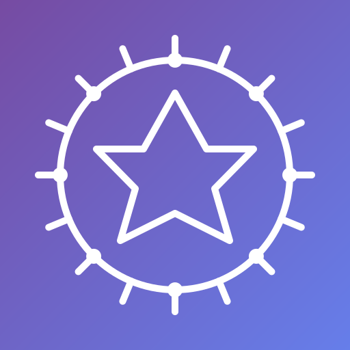

🌈 Identidad Visual: Paleta Multi-Banda
La identidad visual de AION Codex se inspira en el diagrama de ondas, representando el espectro completo de frecuencias y manifestaciones. Cada banda de color corresponde a una fase del ciclo creativo:
🔥 ERASE
⚡ TRANSFER
💎 MANIFEST
Paleta de Colores
- Rojo (ERASE): Destrucción creativa
- Naranja: Transición ERASE
- Amarillo (TRANSFER): Transformación
- Verde: TRANSFER-MANIFEST
- Cian: Inicio MANIFEST
- Azul: Consolidación MANIFEST
- Violeta: Plenitud MANIFEST
Mandala AION
📁 Estructura del Proyecto
Este sitio estático está desplegado en GitHub Pages con soporte web y PDF (estilos de impresión).
- Código: Apache-2.0
- Textos: CC BY 4.0
- Arte/mandala: Todos los derechos reservados (ver NOTICE.md)